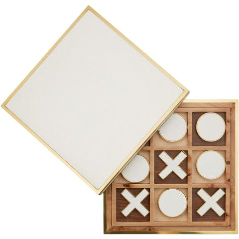
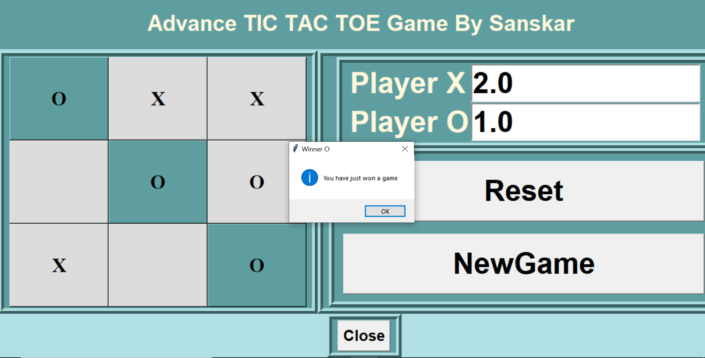

Using Python
"Tic-tac-toe" may also derive from "tick-tack", the name of an old version of backgammon first described in 1558. The US renaming of "noughts and crosses" as "tic-tac-toe" occurred in the 20th century.
Design: It is a two-player tic-tac-toe game, which we can play in the command-line. Initially, there is an empty game board and then we’ll take inputs from the players and we’ll check for the winning condition and if the whole board gets filled and no one wins, we’ll declare the result as “Tie” and ask users if they want to restart the game.
Here is the link of GitHub Repository : Click Here